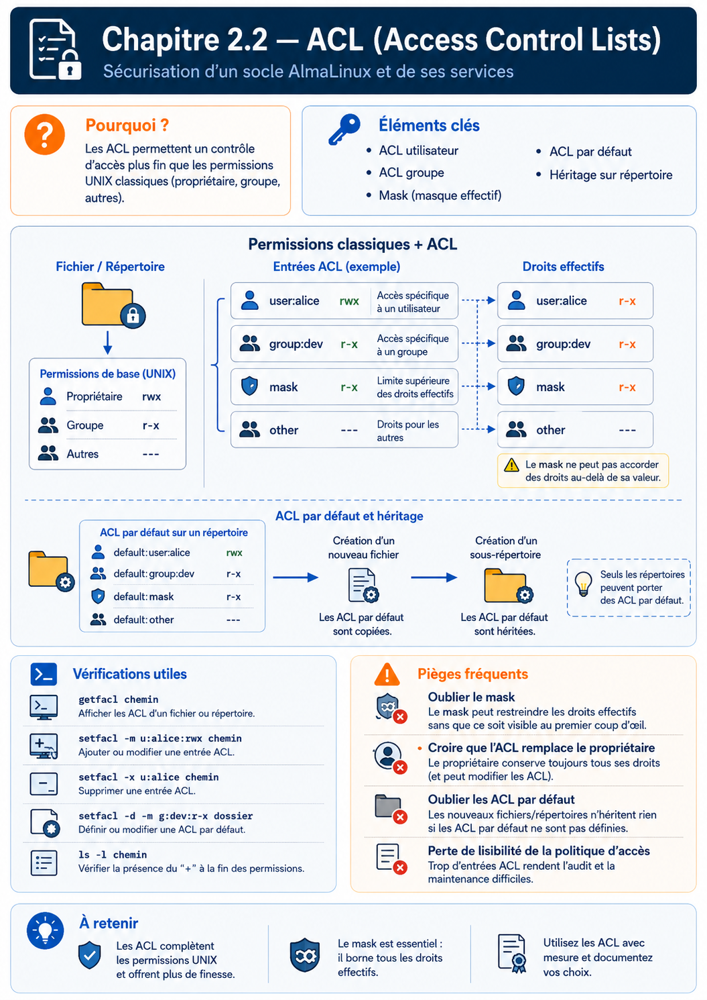

Chapitre 2.2 — Les ACL
Campagne 2 — Contrôle des accès
« La simplicité est une qualité. Jusqu'au jour où elle devient une limite. »
Vous êtes ici
PARTIE I — Construire un socle sécurisé
Campagne 1 [██████████] ✔
Campagne 2 [██░░░░░░░░]
2.1 Les permissions UNIX ✔
► 2.2 ACL
2.3 umask
2.4 Attributs étendus
2.5 PAM
2.6 Politique de mots de passe
2.7 Comptes système
2.8 sudo avancé
2.9 passwd / shadow / group
2.10 Synthèse
Objectifs pédagogiques
À la fin de ce chapitre, vous serez capable de :
- comprendre pourquoi les ACL ont été introduites dans Linux ;
- identifier les limites des permissions UNIX classiques ;
- expliquer le fonctionnement d'une Access Control List ;
- lire et interpréter une ACL ;
- utiliser les commandes
getfacletsetfacl; - créer des ACL pour des utilisateurs et des groupes ;
- comprendre la notion de masque (ACL Mask) ;
- mettre en place des ACL par défaut sur des répertoires.
Pourquoi ce chapitre existe
Les permissions UNIX ont traversé plus d'un demi-siècle. Elles sont toujours utilisées. Elles sont rapides. Faciles à comprendre. Extrêmement efficaces. Alors pourquoi avoir inventé autre chose ? Parce que les systèmes d'information ont changé. Dans les années 1970, quelques dizaines d'utilisateurs partageaient un ordinateur. Aujourd'hui, une entreprise peut compter :
- plusieurs milliers d'utilisateurs ;
- des centaines d'applications ;
- des dizaines d'équipes ;
- des prestataires externes ;
- des robots d'automatisation ;
- des comptes de services.
Les besoins sont devenus beaucoup plus fins. Prenons un exemple. Vous possédez un répertoire contenant des documents sensibles. /projets Le propriétaire est : alice Le groupe est : developpeurs Les permissions sont : drwxrwx--- Un nouvel utilisateur rejoint temporairement l'équipe. Son nom est : paul Vous souhaitez uniquement lui donner un accès en lecture sur ce répertoire. Sans modifier :
- le propriétaire ;
- le groupe ;
- les autres utilisateurs.
Le modèle UNIX classique ne sait pas exprimer cette règle. Il ne connaît que trois catégories.
- propriétaire ;
- groupe ;
- autres.
Paul n'appartient à aucune de ces catégories. Nous avons besoin d'un mécanisme plus précis. C'est exactement ce que proposent les ACL.
Une liste d'autorisations supplémentaire
Une ACL peut être vue comme une extension des permissions UNIX. Les permissions classiques restent présentes. Mais Linux peut désormais ajouter une liste de règles complémentaires. On peut représenter cette évolution ainsi.
Le fichier conserve toujours son propriétaire. Il conserve toujours son groupe. Il conserve toujours ses permissions traditionnelles. Les ACL viennent simplement ajouter des exceptions. Cette approche présente un avantage majeur. Les anciens programmes continuent de fonctionner sans modification. Les nouvelles fonctionnalités restent compatibles avec le modèle UNIX historique.
Les permissions UNIX ne disparaissent pas
Une erreur fréquente consiste à croire que les ACL remplacent les permissions UNIX. Ce n'est pas le cas. Les permissions classiques constituent toujours la base. Les ACL s'y ajoutent. On peut imaginer le raisonnement du noyau de cette manière.
Les deux mécanismes collaborent. Ils ne sont pas concurrents. C'est une idée essentielle. Tout au long de ce chapitre, nous continuerons donc à raisonner d'abord avec les permissions UNIX. Les ACL viendront ensuite affiner cette première décision.
Une première analogie
Imaginons une entreprise. Le service informatique possède un bureau. Pour entrer dans ce bureau, il existe une règle générale. Les membres du service informatique sont autorisés. C'est l'équivalent des permissions UNIX. Puis le responsable ajoute une note sur la porte. Paul peut également entrer. Paul ne rejoint pas officiellement le service informatique. Il bénéficie simplement d'une autorisation particulière. Cette note correspond à une ACL. Le fonctionnement est très similaire.
Les règles générales restent en place. Quelques exceptions viennent les compléter.
Observer une ACL
Créons un fichier.
touch rapport.txt
Affichons ses permissions.
ls -l
Par exemple : -rw-r--r-- Affichons maintenant ses ACL.
getfacl rapport.txt
Le résultat ressemble à ceci.
# file: rapport.txt
# owner: alice
# group: alice
user::rw-
group::r--
other::r--
Cette sortie est très intéressante. Elle reprend exactement les permissions UNIX. Pourquoi ? Parce qu'en réalité, Linux les représente déjà sous forme d'ACL internes. Lorsque vous n'avez ajouté aucune règle particulière, les deux visions sont équivalentes. Les ACL deviennent réellement intéressantes lorsque l'on ajoute des entrées supplémentaires.
Ajouter un utilisateur spécifique
Imaginons maintenant que l'utilisateur : backup doive pouvoir lire ce fichier. Sans modifier le groupe. Sans changer le propriétaire. Il suffit d'ajouter une entrée ACL.
setfacl -m u:backup:r rapport.txt
Observons à nouveau le résultat.
getfacl rapport.txt
Cette fois :
user::rw-
user:backup:r--
group::r--
mask::r--
other::r--
Une nouvelle ligne est apparue. user:backup:r-- Le propriétaire du fichier n'a pas changé. Le groupe n'a pas changé. Les permissions UNIX visibles dans ls -l restent presque identiques. Pourtant, un nouvel utilisateur dispose désormais d'un droit supplémentaire. C'est toute la puissance des ACL.
Lire une ACL pas à pas
Au premier abord, la sortie de getfacl peut sembler plus complexe que celle de ls -l. En réalité, elle suit une logique très régulière. Reprenons notre exemple.
# file: rapport.txt
# owner: alice
# group: alice
user::rw-
user:backup:r--
group::r--
mask::r--
other::r--
Chaque ligne possède une signification précise. Les trois premières lignes sont des informations. # file désigne le fichier. # owner indique son propriétaire. # group désigne son groupe. Viennent ensuite les véritables règles d'accès. user::rw- Cette ligne représente le propriétaire du fichier. Elle correspond exactement au bloc Owner des permissions UNIX. Puis apparaît : user:backup:r-- Cette entrée est une ACL. Elle concerne uniquement l'utilisateur backup. Ensuite : group::r--
correspond au groupe propriétaire. Enfin : other::r-- désigne tous les autres utilisateurs. Une nouvelle ligne attire cependant notre attention. mask::r-- Nous allons bientôt découvrir qu'il s'agit probablement de la partie la plus subtile des ACL.
Le masque ACL
Le mot mask surprend souvent. Pourquoi Linux ajoute-t-il une nouvelle notion alors que les permissions semblaient déjà suffisantes ? La réponse tient à une idée simple. Les ACL permettent d'accorder beaucoup de droits. Le masque permet d'en fixer la limite maximale. Autrement dit :
Une ACL peut demander davantage de permissions.
Le masque décide jusqu'où ces permissions peuvent réellement aller.
On peut représenter cette idée ainsi.
Le masque agit comme un plafond. Les permissions effectivement obtenues correspondent à l'intersection entre les droits demandés et ceux autorisés par le masque.
Un premier exemple
Prenons un fichier.
touch secret.txt
Ajoutons une ACL.
setfacl -m u:backup:rwx secret.txt
Affichons le résultat.
user::rw-
user:backup:rwx
group::r--
mask::rwx
other::r--
Ici, tout paraît cohérent. Le masque autorise : rwx L'utilisateur backup obtient donc effectivement : rwx Mais imaginons maintenant que le masque soit modifié.
setfacl -m m:r-- secret.txt
La sortie devient :
user::rw-
user:backup:rwx
group::r--
mask::r--
other::r--
La ligne concernant backup n'a pas changé. Pourtant, ses droits effectifs ont changé. Pourquoi ? Parce que le masque les limite désormais à : r-- Les droits affichés dans l'entrée ACL représentent les droits demandés. Les droits réellement utilisables sont calculés après application du masque.
Pourquoi ce mécanisme existe-t-il ?
À première vue, ce fonctionnement paraît inutilement compliqué. Pourquoi ne pas modifier directement chaque ACL ? La réponse apparaît lorsqu'un fichier possède de nombreuses entrées. Imaginons :
user:backup
user:auditeur
user:supervision
group:admins
group:developpeurs
group:qualite
Supposons que l'on souhaite rendre temporairement tous ces accès non modifiables. Sans masque, il faudrait modifier chaque entrée individuellement. Avec le masque, une seule opération suffit. mask::r-- Toutes les ACL concernées deviennent immédiatement limitées à la lecture. Le masque joue donc un rôle comparable à un interrupteur général. Il simplifie considérablement l'administration.
Les permissions affichées par ls -l
Voici une situation qui déroute presque tous les administrateurs lors de leur première rencontre avec les ACL. Créons une ACL.
setfacl -m u:backup:r rapport.txt
Puis exécutons :
ls -l
Le résultat est légèrement différent. -rw-r--r--+ Un caractère supplémentaire est apparu. + Ce symbole est extrêmement important. Il indique simplement :
« Des ACL supplémentaires existent sur ce fichier. »
Il ne donne aucun détail. Pour connaître leur contenu, il faut utiliser :
getfacl
Ainsi, un administrateur expérimenté remarque immédiatement ce +. Il sait alors que la simple lecture des permissions UNIX ne suffit plus.
Les ACL sur les répertoires
Les ACL ne concernent pas uniquement les fichiers. Elles peuvent également être appliquées aux répertoires. Prenons l'exemple suivant. /projets Nous souhaitons que l'utilisateur : backup puisse consulter son contenu. Sans appartenir au groupe propriétaire. Une simple commande suffit.
setfacl -m u:backup:rx /projets
Le noyau appliquera ensuite cette règle lors de chaque tentative d'accès à ce répertoire. Les permissions UNIX restent présentes. Les ACL viennent simplement ajouter une nouvelle possibilité.
Culture technique
Les ACL utilisées sous Linux sont définies par la norme POSIX.1e. Fait intéressant, cette norme n'a jamais été finalisée. Le projet POSIX.1e a été abandonné avant son adoption officielle. Pourtant, son modèle d'ACL était suffisamment pertinent pour être repris par de nombreux systèmes UNIX et Linux. Aujourd'hui encore, lorsqu'on parle d'ACL POSIX sous Linux, on fait référence à une spécification qui est restée à l'état de projet.
À ne pas confondre avec les ACL utilisées dans certains systèmes de fichiers comme NTFS ou NFSv4. Ces dernières sont beaucoup plus riches. Elles permettent notamment :
- des permissions de refus explicites (deny) ;
- un héritage très élaboré ;
- des dizaines de droits distincts.
Les ACL POSIX sont volontairement plus simples. Elles s'intègrent naturellement au modèle historique des permissions UNIX.
Piège classique
Le piège le plus fréquent consiste à multiplier les ACL jusqu'à rendre la politique de sécurité illisible. Prenons un exemple. Un répertoire possède :
- huit utilisateurs nommés ;
- six groupes ;
- plusieurs ACL par défaut ;
- un masque restrictif.
Quelques mois plus tard, plus personne ne sait réellement qui peut accéder aux fichiers. Le système fonctionne. Mais la politique est devenue incompréhensible. Une règle simple peut aider.
Si vous avez besoin d'ajouter une ACL à presque tous les fichiers d'un répertoire, il est probablement temps de revoir votre stratégie de groupes.
Les groupes représentent les règles générales. Les ACL représentent les exceptions. Mélanger ces deux niveaux conduit souvent à une administration difficile et à des erreurs de sécurité.
TP 1 — Expérimenter sur AlmaLinux
Dans ce laboratoire, nous allons créer nos premières ACL. Commençons par créer un utilisateur dédié.
sudo useradd backup
Créons ensuite un fichier de démonstration.
touch rapport.txt
Observons son état initial.
ls -l rapport.txt
Puis :
getfacl rapport.txt
Ajoutons maintenant une ACL.
setfacl -m u:backup:r rapport.txt
Vérifions le résultat.
ls -l rapport.txt
Vous remarquerez l'apparition du caractère : + Affichons ensuite les ACL.
getfacl rapport.txt
Vous devriez observer une sortie proche de celle-ci.
user::rw-
user:backup:r--
group::r--
mask::r--
other::r--
Supprimons maintenant cette ACL.
setfacl -x u:backup rapport.txt
Puis vérifions à nouveau.
getfacl rapport.txt
Le fichier retrouve sa représentation initiale. Cette manipulation est volontairement simple. L'objectif est de vous familiariser avec les outils avant de construire des politiques plus élaborées.
Les ACL par défaut
Jusqu'à présent, nous avons ajouté des ACL sur des fichiers existants. Mais imaginons un répertoire partagé. Chaque jour, de nouveaux fichiers y sont créés. Faudra-t-il ajouter une ACL manuellement sur chacun d'eux ? Heureusement, non. Linux permet de définir des ACL par défaut (Default ACLs). Elles ne s'appliquent pas au répertoire lui-même. Elles servent de modèle pour tous les nouveaux objets créés à l'intérieur. Prenons un répertoire de travail.
mkdir projets
Nous souhaitons que tout nouveau fichier créé dans ce répertoire accorde automatiquement un accès en lecture au compte backup. Il suffit de définir une ACL par défaut.
setfacl -d -m u:backup:r projets
L'option : -d signifie :
« Cette règle est un modèle d'héritage, pas une permission immédiate. »
À partir de cet instant, chaque nouveau fichier créé dans projets héritera automatiquement de cette ACL. Nous verrons dans la suite du chapitre comment cet héritage fonctionne précisément, et quelles sont ses interactions avec l'umask et les permissions classiques.
Comment fonctionne l'héritage des ACL ?
Le mot héritage peut laisser penser que les ACL se propagent en permanence. Ce n'est pas le cas. Sous Linux, les ACL par défaut sont utilisées uniquement au moment de la création d'un nouvel objet. Prenons un exemple. Un répertoire possède la configuration suivante. projets/ ACL par défaut : default:user:backup:r-- Lorsqu'un utilisateur crée un nouveau fichier :
touch projets/rapport.txt
le noyau consulte les ACL par défaut du répertoire. Il construit alors les ACL du nouveau fichier. Une fois cette opération terminée, les deux objets deviennent indépendants. On peut représenter ce mécanisme ainsi.
Si, quelques heures plus tard, vous modifiez les ACL par défaut du répertoire, les fichiers déjà créés ne seront pas modifiés. Seules les créations futures utiliseront la nouvelle politique. Cette distinction est essentielle.
Observer les ACL par défaut
Créons un répertoire.
mkdir partage
Ajoutons une ACL par défaut.
setfacl -d -m u:backup:r partage
Affichons ensuite les ACL.
getfacl partage
La sortie ressemble à ceci.
user::rwx
group::r-x
other::r-x
default:user::rwx
default:user:backup:r--
default:group::r-x
default:mask::r-x
default:other::r-x
Les lignes commençant par : default: ne décrivent pas les permissions actuelles du répertoire. Elles décrivent le modèle qui sera utilisé pour les futurs objets créés à l'intérieur. C'est une différence importante.
ACL et création d'un nouveau fichier
Créons maintenant un fichier.
touch partage/compte-rendu.txt
Puis observons-le.
getfacl partage/compte-rendu.txt
Vous constaterez que l'utilisateur backup apparaît désormais dans les ACL du fichier. Pourtant, nous ne lui avons jamais appliqué directement une ACL. Elle provient du répertoire parent. L'héritage a joué son rôle au moment de la création. On peut représenter cette propagation de la manière suivante.
Chaque nouvel objet reçoit une copie. Par la suite, chacun évolue indépendamment.
Les ACL ne remplacent pas l'umask
Un autre point mérite d'être clarifié. Lorsque nous créerons un fichier, deux mécanismes interviendront. Le premier est l'umask. Le second est l'ACL par défaut. Ces deux mécanismes collaborent. Ils ne s'excluent pas. On peut représenter la création d'un fichier ainsi.
Dans le prochain chapitre, nous étudierons précisément le rôle de l'umask. Vous comprendrez alors pourquoi les permissions d'un fichier nouvellement créé ne correspondent pas toujours exactement à ce que l'on attend.
Les systèmes de fichiers compatibles
Toutes les ACL ne sont pas disponibles sur tous les systèmes de fichiers. Sous AlmaLinux, les principaux systèmes de fichiers utilisés en production prennent en charge les ACL POSIX. Par exemple :
- XFS ;
- ext4.
C'est l'une des raisons pour lesquelles XFS est le système de fichiers par défaut sur les distributions RHEL et AlmaLinux. Les ACL y sont parfaitement intégrées. Dans la plupart des installations modernes, aucune configuration supplémentaire n'est nécessaire. En revanche, dans des environnements plus anciens ou avec certains systèmes de fichiers particuliers, il pouvait être nécessaire d'activer explicitement la prise en charge des ACL au montage. Aujourd'hui, cette situation est devenue rare.
Culture technique
Les ACL POSIX sont volontairement limitées. Par exemple, elles ne permettent pas d'exprimer directement une règle du type :
« Cet utilisateur ne doit jamais accéder à ce fichier. »
Autrement dit, il n'existe pas de notion de refus explicite (deny). Les ACL POSIX accordent des droits. Elles ne créent pas de règles de refus. Cette philosophie est très différente de celle des ACL NTFS utilisées sous Windows. Dans NTFS, une règle de refus explicite peut prendre le pas sur une règle d'autorisation. Sous Linux, la logique est plus simple. On détermine les droits effectivement accordés. Tout ce qui n'est pas autorisé est implicitement interdit.
Cette approche réduit la complexité de l'évaluation. Elle évite également certains conflits de règles.
Piège classique
L'une des erreurs les plus fréquentes consiste à oublier les ACL lors d'une sauvegarde ou d'une copie. Prenons cet exemple.
cp rapport.txt sauvegarde/
Selon les options utilisées, la copie peut perdre :
- ses ACL ;
- certains attributs étendus ;
- d'autres métadonnées.
Le fichier semble identique. Son contenu est identique. Mais sa politique de sécurité ne l'est plus. Pour préserver les ACL lors d'une copie, il est préférable d'utiliser des outils ou des options adaptés. Par exemple :
cp -a
ou encore :
rsync -A
Nous reviendrons sur ces commandes dans les chapitres consacrés aux sauvegardes et aux déploiements. Un bon administrateur ne vérifie jamais uniquement les données copiées. Il vérifie également les métadonnées.
TP 2 — Expérimenter sur AlmaLinux
Nous allons maintenant expérimenter les ACL par défaut. Créons un nouveau répertoire.
mkdir laboratoire-acl
Définissons une ACL par défaut.
setfacl -d -m u:backup:r laboratoire-acl
Créons ensuite deux fichiers.
touch laboratoire-acl/a.txt
touch laboratoire-acl/b.txt
Affichons leurs ACL.
getfacl laboratoire-acl/a.txt
Puis :
getfacl laboratoire-acl/b.txt
Vous constaterez que les deux fichiers possèdent déjà une entrée pour l'utilisateur backup. Essayons maintenant de modifier les ACL par défaut.
setfacl -d -m u:backup:rw laboratoire-acl
Créons un troisième fichier.
touch laboratoire-acl/c.txt
Affichons son ACL.
getfacl laboratoire-acl/c.txt
Comparez-la avec celle de a.txt. Vous remarquerez que :
c.txthérite de la nouvelle politique ;a.txtconserve l'ancienne.
Cela confirme que l'héritage intervient uniquement lors de la création.
Sauvegarder, restaurer et auditer les ACL
Une ACL utile fait partie de la politique du fichier : une sauvegarde qui ne conserve que le contenu et le mode classique est incomplète. getfacl -R produit une représentation restaurable ; setfacl --restore réapplique les propriétaires, groupes, ACL et, lorsqu'ils figurent dans la sauvegarde, les bits spéciaux.
sudo getfacl -R /srv/sentinel > sentinel.acl
sudo setfacl --test --restore=sentinel.acl
sudo setfacl --restore=sentinel.acl
Le mode --test est précieux : il montre l'effet attendu sans modifier les fichiers. Pour une copie, vérifiez les options de l'outil : rsync -A préserve les ACL et cp -a vise la conservation des métadonnées, mais le support dépend aussi des systèmes de fichiers source et destination.
Une ACL ne doit pas devenir une base d'identités cachée. Documentez les entrées nommées, préférez un groupe lorsqu'un rôle est durable, et cherchez régulièrement les ACL inattendues :
getfacl -R -s /srv/sentinel
Mission d'ingénieur — Concevoir le partage des journaux
Concevez les ACL de /var/log/sentinel pour que le service écrive, que le groupe d'exploitation lise et parcoure, et qu'un compte de sauvegarde lise sans modifier. Ajoutez les ACL par défaut nécessaires, calculez le masque effectif, créez deux fichiers de test sous des identités différentes et fournissez la sauvegarde getfacl comme livrable. Expliquez pourquoi chaque besoin relève d'un groupe, d'une ACL nommée ou des permissions classiques.
Impact sur Sentinel
Au fil de cette formation, Sentinel manipulera différents types de ressources. Certaines devront être accessibles uniquement au compte de service. D'autres devront également être consultables par :
- un compte de sauvegarde ;
- un agent de supervision ;
- un outil d'audit ;
- un administrateur.
Les ACL permettront de répondre à ces besoins sans modifier les groupes principaux. Prenons un exemple. /var/log/sentinel/ Les journaux sont écrits par le service Sentinel. L'équipe d'exploitation doit pouvoir les consulter. Le logiciel de sauvegarde doit également y accéder. En revanche :
- il ne doit pas pouvoir modifier les journaux ;
- il ne doit pas appartenir au groupe du service.
Une ACL constitue alors une solution élégante. Elle évite d'élargir inutilement les privilèges du compte de sauvegarde. Cette approche est très courante dans les infrastructures d'entreprise.
Synthèse
- Les ACL complètent les permissions UNIX ; elles ne les remplacent pas.
- Elles permettent d'accorder des droits à des utilisateurs ou à des groupes nommés sans modifier le propriétaire ni le groupe principal.
- Le caractère
+affiché parls -lindique la présence d'ACL supplémentaires. - Les commandes principales sont
getfaclpour consulter les ACL etsetfaclpour les créer, les modifier ou les supprimer. - Le masque ACL (
mask) fixe la limite maximale des permissions accordées aux utilisateurs et groupes définis dans les ACL (à l'exception du propriétaire). - Les ACL par défaut servent de modèle lors de la création de nouveaux fichiers et répertoires.
- Les ACL doivent rester des exceptions. Une politique reposant essentiellement sur des ACL est souvent le signe qu'une meilleure organisation des groupes est nécessaire.
Pour aller plus loin
Grâce aux ACL, nous savons désormais répondre à une question importante.
« Qui peut accéder à une ressource déjà existante ? »
Mais une autre question apparaît immédiatement. Que se passe-t-il lorsqu'un nouveau fichier est créé ? Prenons un exemple très simple. Deux utilisateurs exécutent exactement la même commande.
touch rapport.txt
Pourtant, les permissions obtenues peuvent être différentes. Pourquoi ? Le fichier n'existait pas une seconde auparavant. Qui a choisi ses permissions ? L'application ? Le noyau ? Le système de fichiers ? L'utilisateur ? En réalité, plusieurs mécanismes interviennent. L'un d'eux est particulièrement important. Il s'appelle l'umask. Contrairement aux permissions UNIX ou aux ACL, l'umask ne contrôle pas l'accès à un fichier existant. Il intervient au moment de la création. Son rôle est discret.
Pourtant, il influence quotidiennement tous les fichiers créés sur un système Linux. Comprendre son fonctionnement est indispensable pour éviter de créer, sans le vouloir, des fichiers trop permissifs. Dans le prochain chapitre, nous allons découvrir comment Linux décide des permissions initiales d'un nouveau fichier et pourquoi cette décision est bien plus subtile qu'il n'y paraît.
← 2.1 — Les permissions UNIX · 2.3 — L'umask →
Schéma récapitulatif
